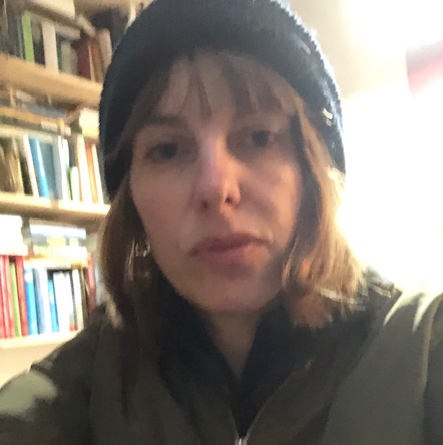

Jurena Wille
Lab Manager
Graduate degree in psychology with a focus on cognitive neuroscience and legal psychology. Manages lab operations while investigating conformity behavior, perceptions of morality, and Free Will beliefs.